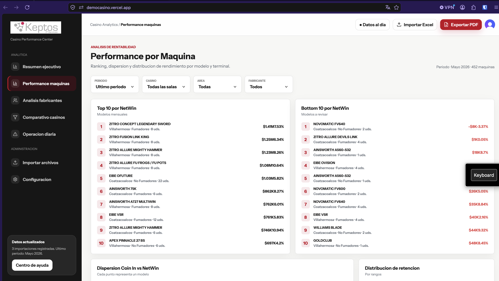
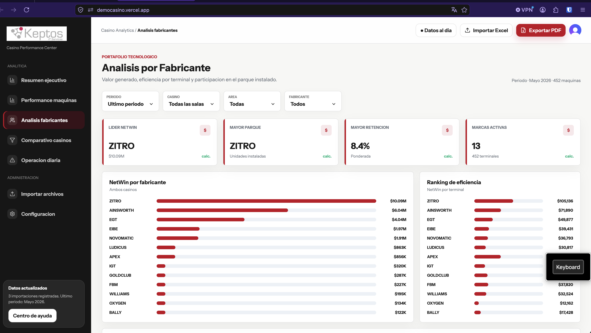
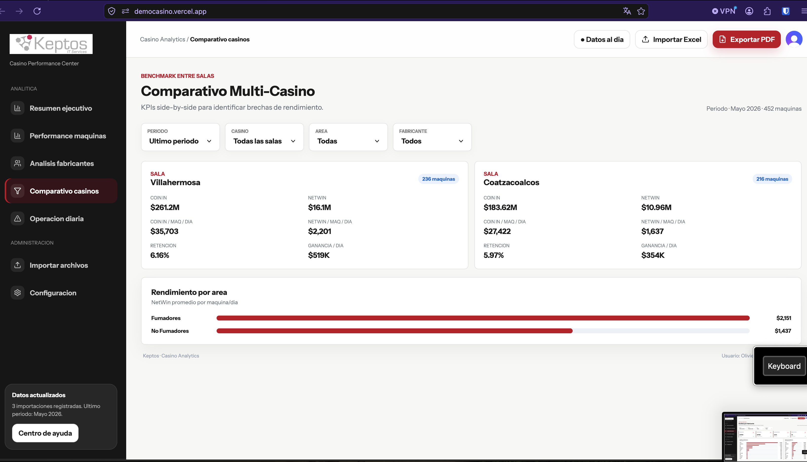
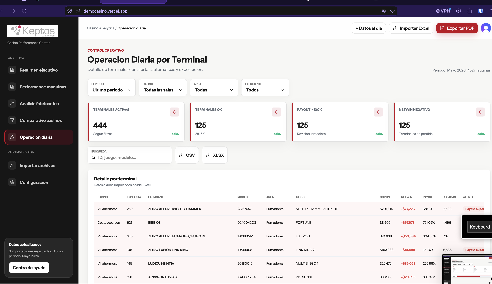

1. Visión general
Keptos Casino Analytics centraliza los datos importados desde Excel para evaluar desempeño financiero, operación diaria, modelos de máquinas, fabricantes y salas.
Resumen ejecutivoVista consolidada de Coin In, NetWin, retención, jugadas, ganancia diaria y máquinas activas.
Performance máquinasRanking Top/Bottom por modelo, dispersión Coin In vs NetWin y detalle por terminal.
Análisis fabricantesComparativo de marcas por NetWin, parque instalado, eficiencia y retención.
Comparativo casinosBenchmark entre salas para revisar brechas de volumen, retención y ganancia.
Operación diariaTabla de terminales, alertas, búsqueda y exportación CSV/XLSX.
Olivia AIObservaciones automáticas por pantalla con riesgos y acciones recomendadas.
Los filtros de periodo, casino, área y fabricante afectan los KPIs, tablas, exportaciones y observaciones de Olivia AI.
2. Navegación y controles comunes
Menú lateral
Use el menú de la izquierda para cambiar entre los módulos analíticos y administrativos.
Filtros
- Periodo: selecciona el periodo mensual disponible.
- Casino: filtra una sala específica o muestra todas.
- Área: separa Fumadores, No Fumadores u otras zonas importadas.
- Fabricante: limita el análisis a una marca.
Acciones superiores
- Importar Excel: carga reportes mensuales o diarios cuando el usuario tiene permiso.
- Exportar PDF: genera un reporte ejecutivo en PDF con los filtros actuales.
- Datos al día: confirma que la vista usa la información importada disponible.
3. Performance por Máquina

Esta pantalla permite identificar los modelos con mejor y peor rendimiento mensual.
Funciones principales
- Top 10 y Bottom 10 por NetWin.
- Dispersión Coin In vs NetWin para comparar modelos.
- Distribución de retención por rangos.
- Olivia AI para observaciones específicas de desempeño por modelo.
Detalle por máquina
- Haga clic en el nombre de un modelo dentro del Top 10 o Bottom 10.
- Revise la ventana de detalle con unidades, Coin In, NetWin, jugadas y periodo.
- Consulte cada terminal: ID planta, juego instalado, isla, posición, fechas, payout y alerta.
4. Análisis por Fabricante

Permite revisar el aporte de cada marca al resultado total y comparar eficiencia operativa.
Indicadores destacados
- Líder NetWin: fabricante con mayor generación neta.
- Mayor parque: fabricante con más unidades instaladas.
- Mayor retención: mejor retención ponderada.
- Marcas activas: cantidad de fabricantes presentes.
Uso recomendado
Use Olivia AI para detectar concentración de ingresos, dependencia de marcas líderes y fabricantes con baja eficiencia por terminal.
5. Comparativo Multi-Casino

Presenta un benchmark entre salas para identificar brechas de volumen, rentabilidad y eficiencia.
Qué revisar
- Coin In total por sala.
- NetWin total y NetWin por máquina por día.
- Retención de cada sala.
- Ganancia diaria promedio.
- Rendimiento por área.
Olivia AI puede convertir estas diferencias en recomendaciones operativas para balancear parque, áreas y promociones.
6. Operación Diaria por Terminal

Esta pantalla baja al detalle diario de cada terminal y muestra alertas automáticas.
Funciones principales
- KPIs de terminales activas, terminales OK, payout superior a 100% y NetWin negativo.
- Búsqueda por ID, juego, modelo o fabricante.
- Exportación de la tabla en CSV o XLSX.
- Alertas visuales en filas con pérdidas o payout anormal.
Uso recomendado
Filtre por casino, área o fabricante, revise las primeras alertas y use Olivia AI para priorizar auditorías o ajustes semanales.
7. Olivia AI
Olivia AI es el módulo de observaciones automáticas disponible en cada pantalla analítica. El botón Analizar toma los datos visibles y genera:
- Observación específica de la pantalla activa.
- Riesgos operativos principales.
- Acciones recomendadas para la siguiente semana.
Comportamiento por pantalla
Resumen ejecutivoSintetiza salud financiera, retención y volumen general.
Performance máquinasCompara modelos líderes y modelos a revisar.
FabricantesAnaliza concentración, eficiencia y parque instalado por marca.
CasinosDetecta brechas entre salas y áreas.
Operación diariaPrioriza alertas de payout y NetWin negativo.
Modo respaldoSi el servicio IA externo no responde, Olivia AI genera una observación local con reglas del dashboard.
8. Exportaciones e importaciones
Exportar PDF
Use el botón rojo Exportar PDF para descargar el reporte ejecutivo. El PDF respeta los filtros aplicados en la vista.
Exportar operación diaria
En Operación diaria, use CSV o XLSX para descargar la tabla de terminales filtrada.
Importar Excel
El módulo Importar archivos permite cargar reportes Excel. La aplicación valida duplicados, recalcula KPIs y actualiza las vistas.